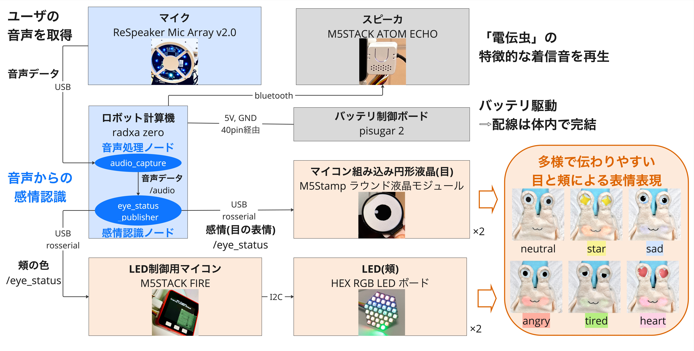

話者の感情を音声の抑揚から分析し、対応する表情を目の液晶・頬のLEDで表出する小型ぬいぐるみロボットです。
Objective
音声通話の手軽さと、相手の感情が伝わる視覚的な分かりやすさを併せ持つ、新しいコミュニケーションの形を模索することを目的として、ぬいぐるみ型のコミュニケーションロボット「電伝虫」を制作しました。音声から感情を分析し、その結果をロボットの表情として提示することで、声だけでは伝わりにくい感情を補完する仕組みを提案しています。
System
マイクで音声を取得し、hume AIのAPIを用いて音声の抑揚から感情分析を行います。rosserial通信を用いて目のモニタや頬のLEDに指令を送り、表情表出を行います。表情は6種に分類しました。
※目のモニタは研究室の先輩が開発したプラットフォームを使用し、調整は自身で行いました。

Considerations
電伝虫は、コミュニケーションロボットとして重要な見た目の親しみやすさに加え、抱き上げたり撫でたりといった扱いに耐えられる耐久性、マイクやスピーカ周辺での通気性を同時に満たす必要がありました。そのため、外装全体には柔らかさと耐久性のバランスが取れたキルティング生地を採用し、マイク・スピーカ周辺には通気性を重視して目の粗いチュール素材を用いました。試作段階ではそれぞれフェルトや排水溝ネットなども検討しましたが、毛羽立ちや破れやすさといった点から、本制作では使用を見送りました。
Exhibition
- May 18-19, 2024 —The University of Tokyo May Festival
Observations
展示では、未就学児を中心とした幼い子どもたちから特に高い関心を集めました。ぬいぐるみらしい柔らかな外観に惹かれ、自ら近づいて興味を示す様子が多く見られました。子どもたちは電伝虫を抱き上げたり、頬ずりをしたり、つねったりするなど、他の硬い外装を持つロボットではあまり見られない、親しみのある触れ方をしていました。